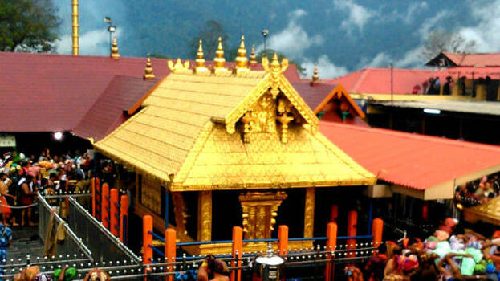

Aranmula Boat Race
The oldest river boat fiesta in Kerala

Sabarimala
A temple complex
Perunthenaruvi Falls
Located on the Western Ghats of the Sahyadri Range
Previous
Next
Pathanamthitta is a municipality situated in the Central Travancore region in the state of Kerala,
India, spread over an area of 23.50 km2. It is the administrative capital of Pathanamthitta
district. The town has a population of 37,538. The Hindu pilgrim centre Sabarimala is situated
in the Pathanamthitta district; as the main transport hub to Sabarimala, the town is known as
the 'Pilgrim Capital of Kerala'.[3] Pathanamthitta District, the thirteenth revenue district
of the State of Kerala, was formed with effect from 1 November 1982 vide G.O.
(M.S) No.1026/82/RD dated 29 October 1982, with headquarters at Pathanamthitta.
Did You Know??
- Pathanamthitta was found to have the cleanest air in India
- Pathanamthitta district is known as the "headquarters of pilgrimage tourism."
- Pathanamthitta is one of the Richestt districts in India
Aranmula Boat Race
The Aranmula Boat Race the oldest river boat fiesta in Kerala, the south western State of
India is held during Onam (August–September). It takes place at Aranmula, near a Hindu
temple dedicated to Lord Krishna and Arjuna in Pathanamthitta district of Kerala State.
Its more of a ritual conducted on the birthday of Arjuna, than a race event. The snake
boats move in pairs to the rhythm of full-throated singing and shouting watched by an
exciting crowd.In 1972, snake boat races were also added to the program of the festival.
Read More
Sabarimala
The Śabarimala Temple is a temple complex located at Sabarimala inside the Periyar Tiger
Reserve in the Perinad Village, Pathanamthitta district, Kerala, India.It is one of the
largest annual pilgrimage sites in the world with an estimate of over 40 to 50 million
devotees visiting every year.The temple is dedicated to a Hindu celibate
deity Ayyappan also known as Dharma Shasta, who according to belief is the son of Shiva
and Mohini, the feminine incarnation of Vishnu.
Read More
Perunthenaruvi Falls
Perunthenaruvi Waterfalls (Malayalam: പെരുന്തേനരുവി) are waterfalls 36 km (22 mi) from
Pathanamthitta in Pathanamthitta District, Central Travancore region, Kerala State, India.
It is a popular tourist destination situated in Vechoochira Panchayat of Ranni taluk. The
one shore of this waterfall is Kudamurutty and Vechoochira is the other. The main route
to this waterfall starts from Ranni - Athikkayam - Kudamurutty - Perunthenaruvi.
Read More